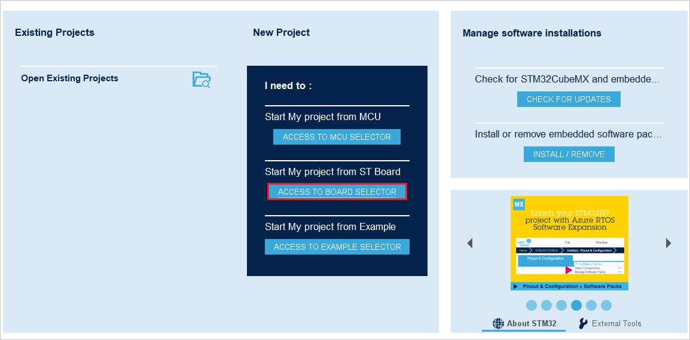
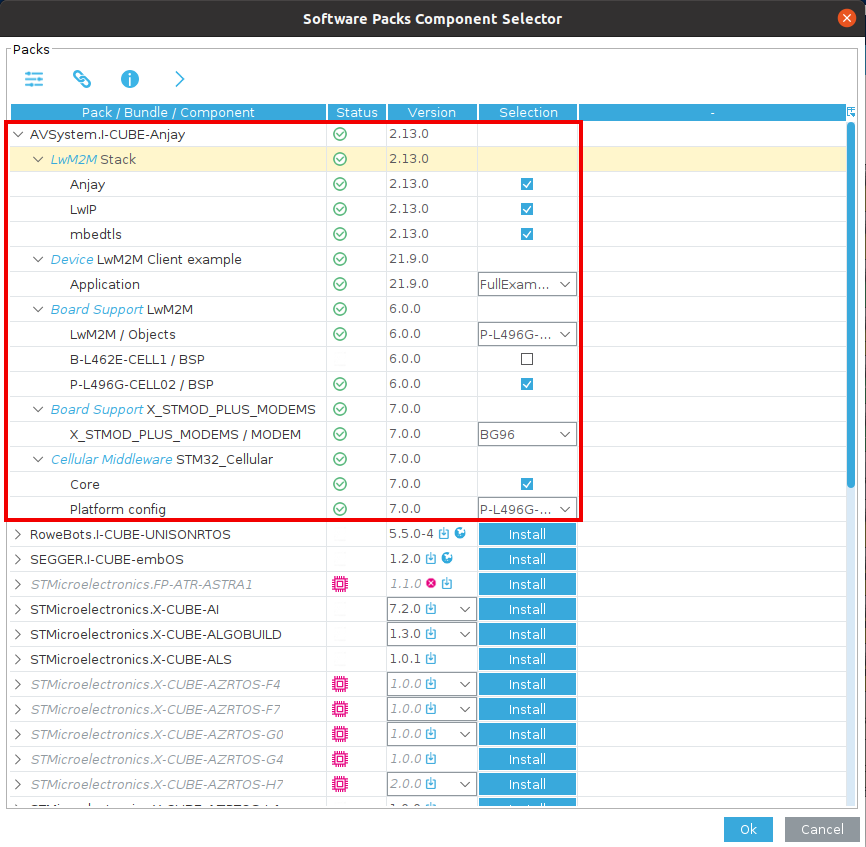
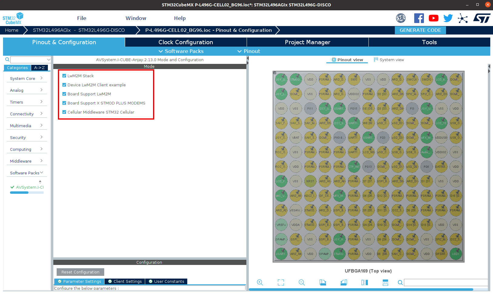
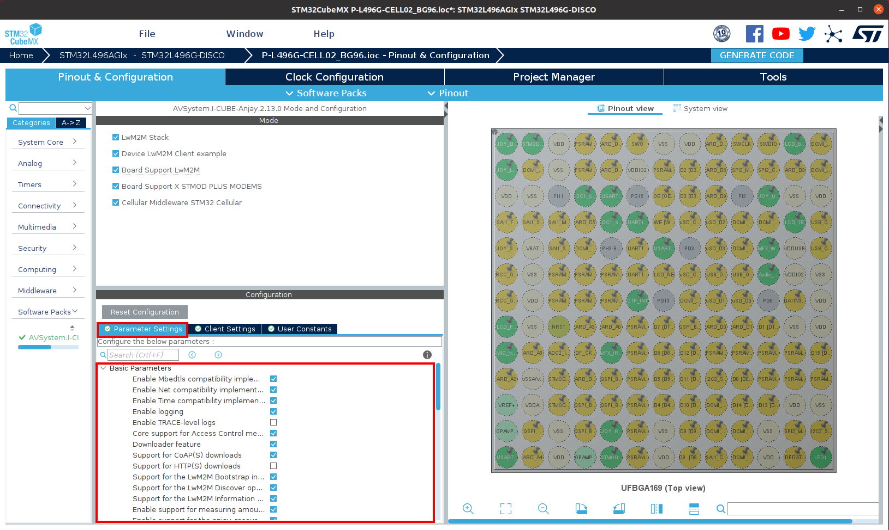

Building LwM2M applications for STM boards with I-CUBE-Anjay#
Start prototyping custom LwM2M applications on your STMicroelectronics board with I-CUBE-Anjay using STM32CubeMX.
Prerequisites#
- An STM board with a USB cable.
- Installed STM32CubeMX.
- Downloaded Anjay I-CUBE pack file.
Step 1: Installing the Anjay I-CUBE software pack#
- Open STM32CUBEMX and in the New project section, select ACCESS TO BOARD SELECTOR. 
- From the list of STM boards, select your board, click Start project and click No in the Initialize all peripherals with their default mode pop-up that appears.

- In the Pinout & Configuration tab, click Software Packs and select Manage Software Packs.

- Click From local and select your Anjay I-Cube pack from your local disk.

- After reading the license agreement, check the license agreement checkbox and click Finish. The pack will be installed in a few seconds.
- Click From local and select your Anjay I-Cube pack from your local disk.
- Back in the Pinout & Configuration tab, click Software Packs and select Select Components. 
- From the list of packs, click AVSystem.I-CUBE-Anjay to expand a list of boards.
- In the list, find your board and check it in the Selection column.
- In the list, find your modem device and check it in the Selection column.
- In the list, find the LwM2M Anjay component and check it in the Selection column.
- In the Device Application component, select anjay in the Selection column to enable your demo application.
Step 2: Configuring the Anjay I-CUBE application#
Before you generate code for your application, you need to configure it as per the specific requirements for your board:
- Back in the Pinout & Configuration tab, expand the Software Packs tab that has appeared in the side menu and click AVSystem.I-CUBE-Anjay.x.xx.x:
- In the Mode window that appears, check all the boxes next to the LwM2M Anjay, Device Application, Device Modem and Board Support
options.  - In the Configuration window:
- Go to the Parameter Settings tab and configure your Anjay Library. For a detailed description of all Anjay library configuration options, see here. 
- Go to the Client Settings tab and configure your LwM2M Client parameters like Endpoint name, PSK, PSK identity, server URI and others.

- In the Mode window that appears, check all the boxes next to the LwM2M Anjay, Device Application, Device Modem and Board Support
- In the Pinout & Configuration tab:
- Expand the Connectivity tab:
- Configure connectivity options (like USART) according to the specific instruction for your board in the Specific CubeMX settings.

- Configure connectivity options (like USART) according to the specific instruction for your board in the Specific CubeMX settings.
- Expand the Middleware tab:
- Configure middleware options according to the specific instruction for your board in the Specific CubeMX settings.

- Configure middleware options according to the specific instruction for your board in the Specific CubeMX settings.
- Expand the Security tab:
- Configure security options according to the specific instruction for your board in the Specific CubeMX settings.
- Expand the Connectivity tab:
Step 3: Generating application code#
- Back in your project overview, select the Project Manager tab:
- In the Project tab:
- In the Project Name field, provide a name for your project.
- From the Toolchain/IDE expandable list, select STM32CubeIDE.
- In the Code Generator tab:
- Check the Generate peripheral initialization as a pair of '.c/.h' files per peripheral.
- In the Project tab:
- Click GENERATE CODE and confirm by clicking Yes in the pop-up.

- After the project is generated, you can use it further in the CubeIDE as per the specific instructions for your board in the Anjay ST integration guide.
Specific CubeMX settings#
B-L462E-CELL1#
Start from board selector with B-L462E-CELL1 board, do not initialize all peripherals with their default mode.
Through Select Components menu choose desired components from the pack, in this example select:
- LwM2M Anjay
- Device TYPE1SC
- Device Application - anjay
- Board Support B-L462E-CELL1
Apply the following settings:
- Connectivity tab:
- I2C1 - Enable
- USART1 - Enable, enable global interrupts
- USART2 - Enable, enable global interrupts
- USART3 - Enable, enable global interrupts
- Middleware tab:
- FreeRTOS
- Interface - CMSIS_V1
- TOTAL_HEAP_SIZE - 18432 Bytes (Required by X-CUBE-CELLULAR)
- USE_COUNTING_SEMAPHORES - Enabled
- FreeRTOS
- Project Manager:
- Code Generator - Enable Generate peripheral initialization as a pair of '.c/.h' files per peripheral.
- Software Packs:
- I-CUBE-Anjay - select all enabled components and modify Client Settings with connection parameters. Parameter settings can be modified to alter Anjay LwM2M Library configuration.
Generate the project and open in STM32CubeIDE.
Right click on the project Build Configurations -> Set Active -> Release.
Select generated project and modify Properties -> C/C++ Build -> Settings -> MCU Settings
Change Runtime library to Standard C, and check Use float with printf from newlin-nano (-u _printf_float)
Flash the project using Run As -> STM32 Cortex-M C\C++ Application.
P-L496G-CELL02#
Start from board selector with STM32L496G-DISCO board, do not initialize all peripherals with their default mode.
Through Select Components menu choose desired components from the pack, in this example select:
- LwM2M Anjay
- Device TYPE1SC
- Device Application - anjay
- Board Support B-L462E-CELL1
Apply the following settings:
- Connectivity tab:
- I2C1 - Enable
- USART1 - Enable, enable global interrupts
- USART2 - Enable, enable global interrupts
- Security tab:
- RNG - Enable
- Middleware tab:
- FreeRTOS
- Interface - CMSIS_V1
- TOTAL_HEAP_SIZE - 18432 Bytes (Required by X-CUBE-CELLULAR)
- USE_COUNTING_SEMAPHORES - Enabled
- FreeRTOS
- Project Manager:
- Code Generator - Enable Generate peripheral initialization as a pair of '.c/.h' files per peripheral.
- Software Packs:
- I-CUBE-Anjay - select all enabled components and modify Client Settings with connection parameters. Parameter settings can be modified to alter Anjay LwM2M Library configuration.
Generate the project and open in STM32CubeIDE.
Select generated project and modify Properties -> C/C++ Build -> Settings -> MCU Settings
Change Runtime library to Standard C, and check Use float with printf from newlin-nano (-u _printf_float)
Flash the project using Run As -> STM32 Cortex-M C\C++ Application.